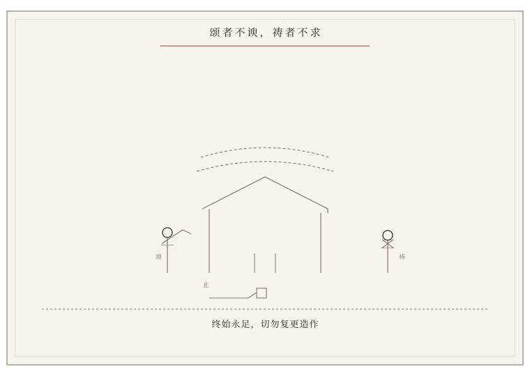

檀弓下 · 四·八十一 · 第 406 课
晋献文子成室，晋大夫发焉。张老曰：「美哉轮焉！美哉奂焉！歌于斯，哭于斯，聚国族于斯。」文子曰：「武也得歌于斯，哭于斯，聚国族于斯，是全要领以从先大夫于九京也。」北面再拜稽首。君子谓之善颂善祷。
说什么事：晋国献文子（赵武）新屋落成，晋国大夫都来送礼致贺。张老说：「美啊，如此高大！美啊，如此众多！以后就在这屋里歌唱、在这屋里哭泣、在这屋里聚国族。」文子说：「我赵武若真能在这屋里歌唱、哭泣、聚国族，那就是保全了颈项腰领，得以随先大夫葬于九原。」北面再拜稽首。君子称之：一个善颂，一个善祷。
落在哪一层：以「止」为界。张老美之，而其实在说「够了，不必再盖」。
为何编在此位：上节论刑之酷，此节论颂之婉。一硬一软，皆礼之「说得进」。
【经】晋献文子成室，晋大夫发焉。张老曰：「美哉轮焉！美哉奂焉！歌于斯，哭于斯，聚国族于斯。」文子曰：「武也得歌于斯，哭于斯，聚国族于斯，是全要领以从先大夫于九京也。」北面再拜稽首。君子谓之善颂善祷。
【注】文子，赵武也。作室成，晋君献之，谓贺也。诸大夫亦发礼以往。／心讥其奢也。轮，轮囷，言高大。奂，言众多。／祭祀、死丧、燕会于此足矣。言此者，欲防其后复为。／全要领者，免于刑诛也。晋卿大夫之墓地在九原。京盖字之误，当为原。／善颂，谓张老之言。善祷，谓文子之言。祷，求也。
【疏】此一节论文子成室相祷颂之事。○「献」谓庆贺也。文子，晋卿赵武也。文子宫室成，晋君贺也。○「晋大夫发焉」者，发，礼也。晋君既贺，则朝廷大夫并发礼同从君贺之。○「张老曰：美哉轮焉」者，张老亦往庆之一大夫也。心讥文子宫室饰丽，故佯而美之也。「轮」谓轮囷高大也。《春秋外传》曰「赵文子为室，斫其椽而砻之，张老谏之」，是也。○「美哉奂焉」者，「奂」谓其室奂烂众多也。既高又多文饰，故重美之。○「歌于斯」者，「歌」谓祭祀时奏乐也。张老前美其饰丽，后又防更造也，言此室可以祭祀歌乐也。然大夫祭无乐，而春秋时或有之也。○「哭于斯」者，又言此室亦足居丧哭泣也。○「聚国族于斯」者，又言此室可以燕聚国宾及会宗族也。终始永足，切勿复更造作。○文子觉讥，故称名自陈，具领述张老之言也。○「是全要领以从先大夫于九京也」者，领，颈也。古者罪重要斩，罪轻颈刑也。「先大夫」谓文子父祖，以其世为大夫，故称父祖为「先大夫」也。九原，文子家世旧葬地也。言若得保此宅以歌哭，终于余年，不被罪讨，是完全要领，寿终而卒，以从先大夫葬于九原也。○「北面再拜稽首」者，辞毕，乃稽首谢过受谏也。「北面」者，在堂礼也。○「君子谓之善颂、善祷」者，见张老与文子皆能中礼，故善之也。「颂」者，美盛德之形容；「祷」者，求福以自辅也。张老因美而讥之，故为「善颂」；文子闻过即服而拜，故为「善祷」也。
献文子 赵武。「献」为谥，或谓贺。
成室 新屋落成。
发 发礼，致贺礼。
轮 轮囷，高大之貌。
奂 奂烂，众多之貌。
歌于斯 在此奏乐祭祀。
哭于斯 在此居丧哭泣。
聚国族于斯 在此燕聚国宾、会合宗族。
全要领 保全颈项腰领，谓不受刑诛。
九京 当作「九原」，晋卿墓地。
稽首 头至地。
颂 称美盛德。
祷 求福。
晋国献文子新屋落成，晋国大夫都来致贺。张老说：「美啊，这般高大！美啊，这般众多！以后就在此歌唱、在此哭泣、在此聚国族。」文子说：「我赵武若能在此时歌、此时哭、此时聚国族，便是保全了颈领，得以随先大夫葬于九原。」北面再拜稽首。君子称之：善颂、善祷。
此章一颂一祷，中间隔三句同文。
张老的三句，是「此屋的用途」；文子的三句，是「此屋的限度」。
颂把屋子说到最大，祷把命说到最安。
第一层 「美哉轮焉」 注云「心讥其奢也」，疏云「佯而美之」。
颂之为体，本不许直。 张老不谏，以颂为谏。
第二层 三句之转 前两句是美，后三句一转而为「用」。
「歌于斯，哭于斯，聚国族于斯」——把一生的三件大事，一次钉在这间屋里。
一处屋子，能容人生的顶点与终点，便够了。 疏云「终始永足，切勿复更造作」，正是此意。
第三层 文子之受 他不辩、不怒，先「称名自陈」，再「具领述张老之言」。
把讥语一字不改地复述一遍，是最高级的服。 疏云「文子觉讥」。
第四层 「全要领」 注云「免于刑诛也」；疏云古者罪重要斩，罪轻颈刑。
此一句忽然从「屋」跳到「颈」。 一屋之美，不如一颈之全。
第五层 「以从先大夫于九京」 九京即九原，赵氏世葬之地。
故他所祷者不是寿，是「能葬在自家坟里」。 此为一卿之最朴之愿。
第六层 「北面再拜稽首」 疏云「北面者，在堂礼也」。
受谏之礼，跪在堂下，面北。 一拜谢过，一拜受教。
第七层 「善颂善祷」 疏云「颂者美盛德之形容，祷者求福以自辅」。
张老美而讥之，故颂善；文子闻过即服，故祷善。 两人各得其体。
与今日何干 今之贺新居者，多贺其大；少有贺其「够用」。
此章给一句：颂要颂得进，祷要祷得下。
| 左 | 右 |
|---|---|
| 成室 | 新屋落成 |
| 晋大夫发 | 致贺礼 |
| 美哉轮焉 | 高大 |
| 美哉奂焉 | 众多 |
| 歌哭聚族 | 三事钉在一屋 |
| 是全要领 | 免于刑诛 |
| 从先大夫于九原 | 得葬祖茔 |
| 北面稽首 | 受谏之礼 |
| 善颂善祷 | 一讥一受 |
画一幅简略的新屋落成场景，视点平视。画面中央画一座高大的屋：两根高柱、一道宽檐、檐下两重门限，屋面之上再画两道平行的弧线，示其高与多。屋前左立一人，举袖向上，作称美之状；右立一人，俯身拱手，作拜受之状。屋之右下角画一条短横线，横线末端画一个小方块，示「止」。画面之上不画文字。赭色只用在那条短横线的末端。
